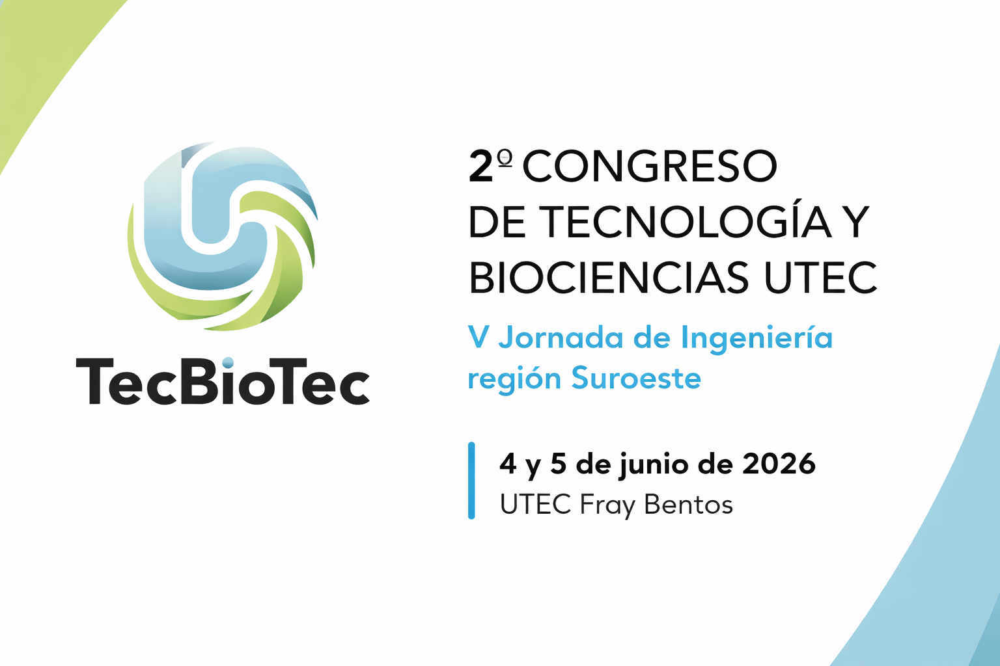
TecBioTec 2026
2o Congreso de Tecnología y Biociencias UTEC
TecBioTec es un espacio académico y profesional orientado al intercambio en tecnología, biociencias e ingeniería.
Fecha de realización del evento
4 y 5 de junio de 2026
Así avanza TecBioTec 2026 🚀
Actualmente, TecBioTec 2026 se encuentra en la etapa de evaluación de trabajos por parte del Comité Científico, prevista entre el 5 y el 20 de mayo de 2026. Esta fase es posterior al proceso de desk check y anonimización de los trabajos recibidos, y antecede a la revisión de conceptos de evaluación, la notificación de resultados a los autores y la preparación de las versiones finales de los trabajos aceptados.
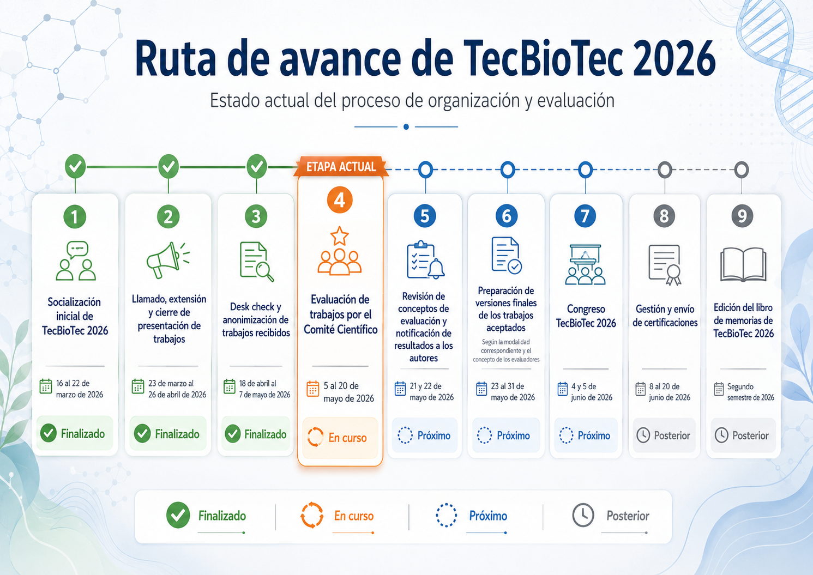

Fecha límite de inscripción de trabajos:
viernes, 17 de abril 2026 - 23:59 Horas
Nueva fecha: domingo, 26 de abril 2026 - 23:59 Horas¡Prepara tu ORCID!
Para el proceso de inscripción de trabajos, será indispensable que todas las personas autoras cuenten con su propio identificador digital de investigador (ORCID). Este dato deberá registrarse al momento de completar el formulario de postulación del trabajo. En caso de que alguna persona autora aún no disponga de este identificador, será necesario crearlo; su obtención es gratuita y puede completarse en pocos minutos.
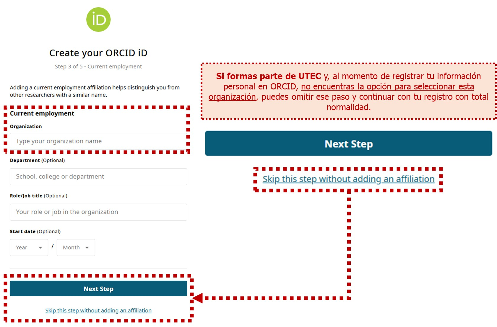
Material de apoyo para autores
🎥 Antes de comenzar, puedes consultar la videoguía práctica de apoyo para una postulación exitosa, elaborada para orientarte en el proceso de postulación y facilitar el registro de tu trabajo en el formulario.
📄 Además, puedes acceder a los documentos PDF que contienen la guía práctica presentada al inicio del Formulario para la postulación de trabajos al congreso TecBioTec 2026 y el ejercicio de ejemplo desarrollado en el video, resguardado también en formato PDF. Al finalizar el proceso, el PDF con el resguardo de tu trabajo tendrá una presentación semejante.
Fecha límite de inscripción de trabajos:
viernes, 17 de abril 2026 - 23:59 Horas
Nueva fecha: domingo, 26 de abril 2026 - 23:59 HorasAsistente Virtual TecBioTec 2026
¡Hola! Soy el asistente inteligente del Congreso. Pregúntame sobre las bases, fechas importantes, inscripciones o cualquier detalle del evento.
Escribe tu pregunta para abrir el chat.
¿El asistente no resolvió tu duda o tienes más comentarios?
Escribe al Email de contacto:
Organización
2o Congreso de Tecnología y Biociencias del ITR Suroeste de la Universidad Tecnológica del Uruguay es un evento académico de gran relevancia para el interior del país. Reúne a estudiantes, investigadores y profesionales de diversas disciplinas relacionadas con la tecnología y las biociencias, con el objetivo de promover el intercambio de conocimientos, experiencias e innovaciones en estos campos.
El congreso contará con conferencias magistrales, presentaciones de investigaciones, mesas redondas y sesiones de pósters, ofreciendo a los participantes la oportunidad de exponer sus trabajos, debatir ideas y establecer colaboraciones. Expertos nacionales e internacionales compartirán sus perspectivas sobre los últimos avances y desafíos en ingeniería y biociencias.
Este espacio busca fomentar el desarrollo académico y profesional de los asistentes, fortalecer redes de colaboración interdisciplinaria, y motivar a las nuevas generaciones de ingenieros y científicos a seguir innovando y explorando en sus áreas de estudio.
Formatos de Participación
Para la edición 2026, los interesados deberán presentar sus trabajos mediante el enlace de inscripción de trabajos que aspiran a la realización de una ponencia o la presentación de un póster habilitado en esta página web. El Comité Científico realizará su valoración según los criterios del congreso. Si el trabajo presenta el nivel de madurez adecuado, se le asignará un espacio para ser socializado como Póster o Ponencia. Si aún se encuentra en etapas tempranas, los autores recibirán retroalimentación formativa y serán invitados a presentar sus avances en la siguiente edición.
Conferencias Magistrales (Por invitación del comité organizador): Expertos reconocidos en tecnología y biociencias ofrecerán conferencias, compartiendo sus conocimientos y perspectivas sobre los avances más recientes y los desafíos en estos campos.
Ponencias: Trabajos seleccionados por el comité científico para presentación oral. Tendrán una duración estricta de 20 minutos, 15 minutos de exposición por parte de un autor y 5 minutos dedicados a preguntas del auditorio.
Pósteres: Modalidad para trabajos aceptados por el comité científico que se benefician de una presentación visual y experiencial, en formato de “póster”. Contarán con un espacio dedicado para fomentar la interacción directa, el debate de ideas y la retroalimentación por parte del público asistente.
Publicación y Alianza Estratégica: Todos los trabajos aceptados integrarán una edición especial de memorias del evento, publicadas en alianza con la Revista LINKS . Adicionalmente, las personas autoras de los trabajos más destacados del congreso recibirán una invitación especial para complementar sus resultados y postular un resumen extendido o un artículo para su posible publicación en una edición regular de la revista. En la medida de lo posible, se buscará que estos trabajos destacados puedan formar parte del Vol. 4, previsto para 2026.
Valor Conceptual de TecBioTec:
Con gran entusiasmo presentamos la segunda edición del Congreso TecBioTec, un evento que continúa creciendo y evolucionando en el suroeste de Uruguay. Enriquecidos por las valiosas experiencias y aprendizajes de nuestro primer encuentro, regresamos con un firme compromiso hacia la mejora continua. Alineado con la visión de la Universidad Tecnológica - UTEC , este espacio busca ser un punto de encuentro cercano y accesible, donde la tecnología y las biociencias convergen para generar una verdadera colaboración interdisciplinaria.
Más allá de lo académico, TecBioTec es una invitación al diálogo abierto entre la educación, la industria y la comunidad. Buscamos fortalecer los vínculos que impulsan la innovación y el desarrollo sostenible de nuestra región. Al compartir conocimientos y celebrar nuevas ideas, nuestro gran propósito es inspirar a las futuras generaciones de tecnólogos y profesionales, así como motivar a toda la sociedad a ser protagonista activa del cambio y el progreso.
Objetivos del congreso:
Construir puentes de diálogo y cooperación multisectorial, facilitando el intercambio de conocimientos y experiencias entre estudiantes, académicos y profesionales en tecnología y biociencias.
Visibilizar y acelerar la innovación tecnológica, impulsando la conversación y la cocreación de soluciones entre todos los participantes.
Tejer redes sólidas y duraderas de colaboración interdisciplinaria y multisectorial, que nutran proyectos y estudios conjuntos para el futuro de Uruguay.
Inspirar a las nuevas generaciones de estudiantes y jóvenes profesionales a liderar su desarrollo en tecnología y biociencias, revelando el horizonte de oportunidades de progreso.
Desplegar un abanico de experiencias de aprendizaje prácticas y transformadoras, como talleres y conferencias, que potencien el talento de los asistentes.
Acelerar el progreso tecnológico y productivo del suroeste de Uruguay, tejiendo puentes entre la educación terciaria de calidad y las necesidades reales de desarrollo de la región.
Vivir y encarnar los valores institucionales de UTEC, haciendo de la innovación, equidad e inclusión la base de nuestro quehacer diario.
Conectar la ciencia y la tecnología con soluciones tangibles que aborden desafíos globales y locales, generando un impacto positivo en la sociedad y el medio ambiente.
Código de Ética y Conducta TecBioTec
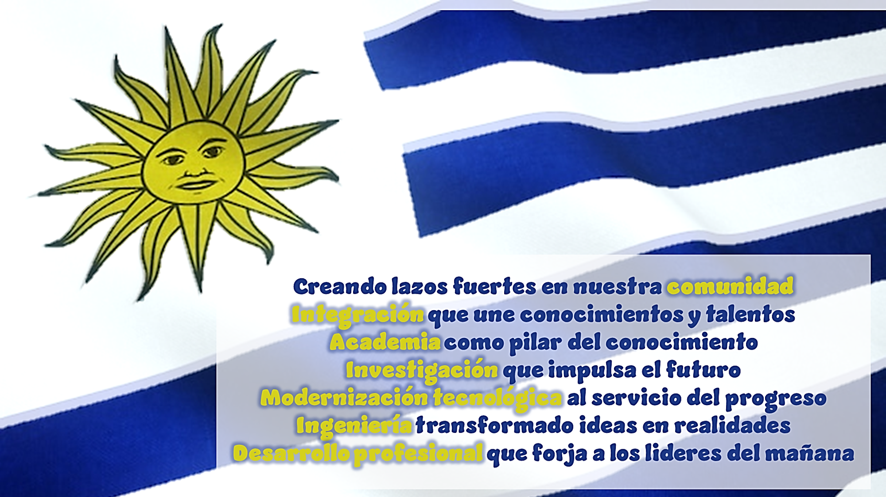
TecBioTec 2026 promueve un ambiente académico, profesional e interdisciplinario basado en la seguridad, la inclusión, el respeto y la colaboración. Todas las personas participantes, incluyendo asistentes, autores, ponentes, presentadores de póster, integrantes de comités, invitados y aliados, son convocadas a contribuir con honestidad, responsabilidad y compromiso al intercambio constructivo de conocimientos.
Los trabajos presentados en TecBioTec 2026 reflejarán principios de integridad académica, originalidad, autoría responsable y uso ético de las fuentes, fortaleciendo una cultura de confianza y transparencia. La participación expresa la adhesión a estos principios y a una construcción colectiva orientada al desarrollo científico, tecnológico y social de la comunidad y la región.
TecBioTec 2026 promueve un ambiente académico caracterizado por la seguridad, la inclusión y la colaboración. Los trabajos presentados reflejarán principios de integridad académica y uso ético de las fuentes. La participación expresa la adhesión a estos principios para una construcción colectiva orientada al desarrollo científico y social.
Programa
Público Objetivo
¡Te invitamos a formar parte de un ecosistema único que reúne a los apasionados de la ciencia y la innovación! El 2o Congreso de Tecnología y Biociencias (TecBioTec) de UTEC es el punto de encuentro ideal para estudiantes universitarios, investigadores, docentes, profesionales de la industria, emprendedores y representantes de organizaciones públicas y ONGs.
Un espacio diseñado para intercambiar conocimientos, tejer redes de contacto con expertos y descubrir los avances que están transformando nuestra región. Si eres un entusiasta del desarrollo tecnológico y las biociencias, este es tu momento para inspirarte y ser protagonista activo del futuro científico e industrial de Uruguay. ¡Súmate y sé parte de esta segunda edición!
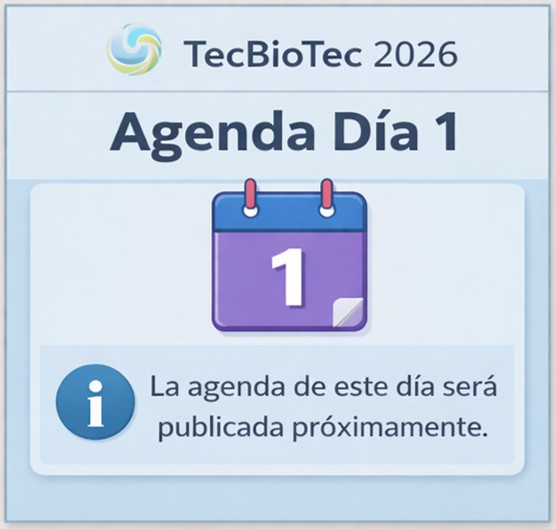
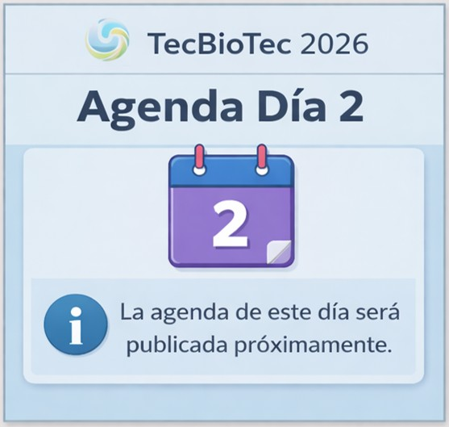
Algunas imágenes de nuestra edición anterior - TecBioTec 2024
.jpeg)
.jpeg)
.jpeg)
.jpeg)
.jpeg)
.jpeg)
.jpeg)
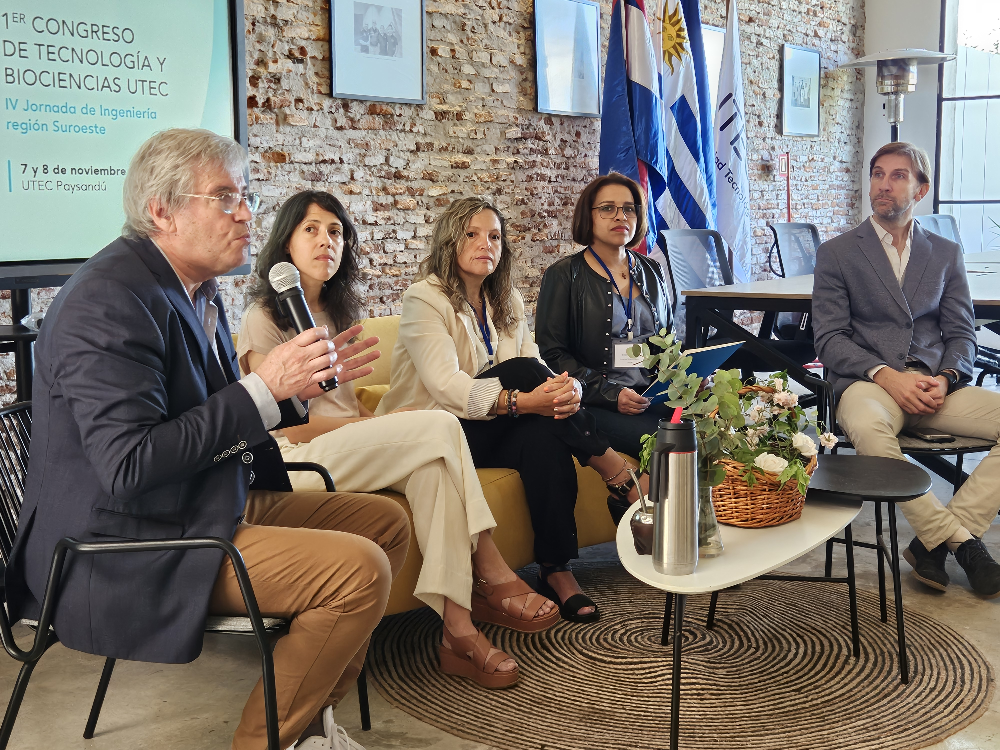
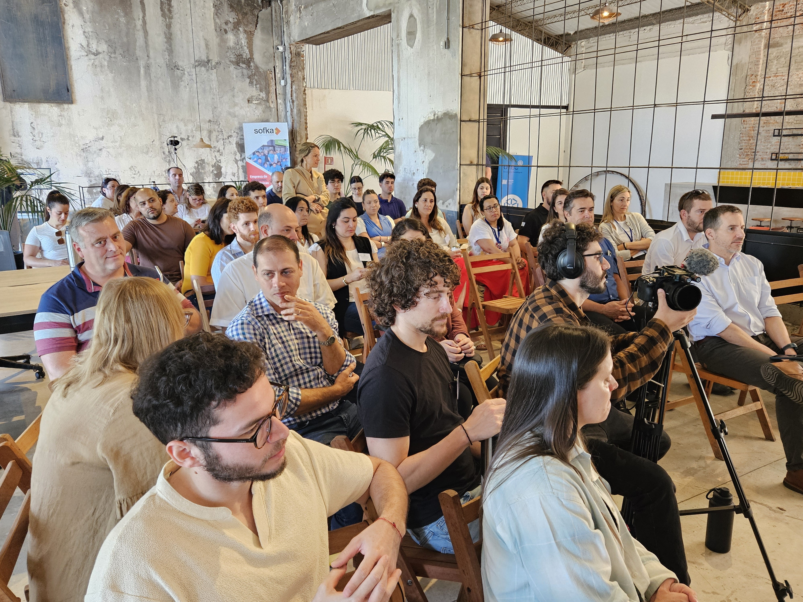
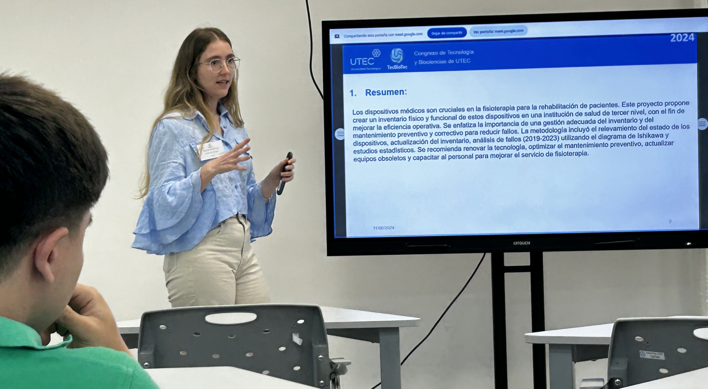
Ejes Temáticos
Abarcan diversas áreas de estudio en UTEC y el Instituto Tecnológico Regional Suroeste, alineándose con el impulso a la innovación de la visión histórica de crecimiento y desarrollo del Plan Estratégico institucional y la Estrategia Nacional 2050.
Mecatrónica y tecnologías afines
Tecnologías digitales y modernización tecnológica
Clave para impulsar la eficiencia y productividad en múltiples sectores. Mejoran procesos, facilitan la automatización de tareas complejas y aumentan la precisión promoviendo soluciones sostenibles.
Logística y Cadena de Abastecimiento
Diseño, Cadenas de valor, Procesos y Logística
Claves para optimizar recursos y mejorar la competitividad. Permiten una entrega eficiente, reducen costos y aumentan la satisfacción del cliente, impulsando el crecimiento sostenible.
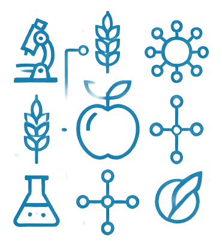
Ciencia y Tecnología de Alimentos
Producción Lechera, Análisis, Seguridad Alimentaria
Garantizan la calidad, seguridad y sostenibilidad en la producción alimentaria. Contribuyen a innovar y optimizar procesos, mejorando la salud y el bienestar de la sociedad.
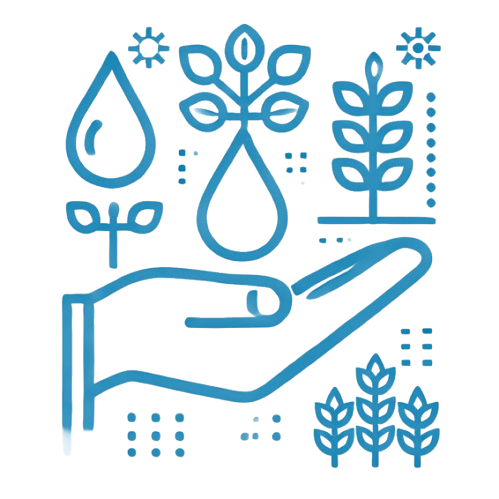
Sostenibilidad y Medio Ambiente
Control Ambiental, Agricultura Inteligente, Sostenibilidad
Pilares fundamentales para enfrentar el cambio climático. Estas prácticas optimizan el uso de los recursos, reducen el impacto ambiental y aseguran un equilibrio entre necesidades humanas y ecosistemas.
Actualmente nos encontramos afinando la programación de las charlas magistrales y talleres de TecBioTec 2026. En breve estaremos compartiendo esta información; después de todo, las buenas agendas también saben hacerse esperar un poco. ⏳
Charlas Magistrales
Primer día
Segundo día
Talleres
Sesiones Especiales
Comité científico
Mecatrónica y Tecnologías Afines
Rafael Rojas Rodríguez
Universidad Politécnica de Puebla rafael.rojas@uppuebla.edu.mx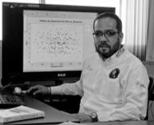
Es ingeniero electrónico con especialidad en control de procesos, tienen una maestría en ciencias en ingeniería industrial con especialidad en control estadístico de procesos, también es maestro en ciencias de la educación con especialidad en diseño curricular bajo el modelo educativo basado en competencias y tienen un doctorado en ciencias en ingeniería mecatrónica. Es miembro del Sistema Nacional de Investigadores de México y director del programa académico de Ingeniería Mecatrónica de la Universidad Politécnica de Puebla. Es autor de cuando menos 15 publicaciones en revistas indexadas y participante en más de 20 congresos de talla nacional e internacional
Félix Payares
Universidad de Oriente (Venezuela) fopayares.anz@udo.edu.veEl Dr. Félix Payares es Ingeniero Mecánico y Profesor Titular de la Universidad de Oriente (UDO), Núcleo Anzoátegui. Con una destacada trayectoria en el Departamento de Ingeniería Mecánica, se especializa en el área de Fabricación y Diseño Mecánico, específicamente en simulación estructural de máquinas, equipos estáticos y componentes mecánicos. En este ámbito, ha colaborado con instituciones internacionales como la Universidad Politécnica de Valencia. En materia de gestión académica, ha desempeñado roles clave en programas de formación a nivel de pregrado, postgrado e industrial, destacando su labor como coordinador en el Centro de Estudios de Postgrado y en la Maestría en Ingeniería Mecánica de la UDO. Asimismo, posee una amplia experiencia en asesoría técnica y en el desarrollo de soluciones de ingeniería para el sector industrial.
Carlos Diaz Novo
Universidad Tecnológica del Uruguay (UTEC) carlos.diaz.n@utec.edu.uyIngeniero Mecánico y Doctor en Ciencias Técnicas, con Maestría en Diseño Mecánico y formación complementaria en Canadá, Polonia, Bélgica, España y Colombia. Docente universitario en Uruguay, Cuba y Canadá e invitado en Europa y América Latina. Investigador activo con publicaciones científicas y participación en congresos internacionales.
Logística y Cadena de Abastecimiento
Verónica Lychenheim
Universidad Tecnológica del Uruguay (UTEC) veronica.lychenheim@utec.edu.uy
Licenciada en Sociología por UDELAR, con formación en Gerencia de Calidad en LATU Sistemas. Cuenta con amplia experiencia en gestión organizacional, habiendo sido Gerente de Gestión de Calidad en TCC, empresa del sector telecomunicaciones. Integró el Consejo de Jueces de INACAL, participando en procesos de evaluación bajo modelos de excelencia. Se desempeña como consultora en gestión de calidad, asesorando a organizaciones en el diseño e implementación de sistemas y mejora continua. Es docente encargada en UTEC en las áreas de Cadena de Suministros y Análisis y Gestión Logística, donde articula formación académica con experiencia profesional aplicada.
Natalia Macri Muela
Universidad Tecnológica del Uruguay (UTEC) natalia.macri@utec.edu.uyMagíster en Educación y TIC (UOC), con Posgrado en Sistemas de Información en las Organizaciones y Gestión de Empresas de TI (UDELAR) y Contadora Pública (Universidad de Montevideo). Actualmente cursa el Doctorado en Ciencias de la Educación en la UNLP. Se desempeña como docente e investigadora en UTEC, en la carrera de Ingeniería en Logística, y es decana de la Facultad de Educación Física, Recreación y Deporte del IUACJ. Cuenta con más de 15 años de experiencia en coordinación de equipos técnicos orientados a la capacitación y consultoría para MIPYMES, así como en la formación y asesoramiento a empresarios.
Rommel Andrés Díaz
Universidad Tecnológica del Uruguay (UTEC) rommel.diaz@utec.edu.uyDoctor en Derecho y Ciencias Sociales, Universidad de la República. - Analista en Comercio Exterior, Universidad ORT Uruguay. - Curso de posgrado Supply Chain Management, en la Facultad de Ingeniería de la Universidad de Buenos Aires. -Programa de Desarrollo Gerencial, Universidad ORT Uruguay. -Postgrado en Educación, Universidad ORT Uruguay. - Tesis en curso del Máster en Educación, Universidad ORT Uruguay. Fue Ejecutivo de Cuenta (Coordinador Logístico Senior) en Costa Oriental, Operador Logístico ubicado en Zonamerica.
Ciencia y Tecnología de Alimentos
Tomás López Pedemonte
Universidad Tecnológica del Uruguay (UTEC) tomas.lopez@utec.edu.uyEs Director del Departamento de Alimentos de UTEC. Es Químico Farmacéutico egresado de la Universidad de la República-UDELAR, Máster y Doctor por la Universidad Autónoma de Barcelona (Programa de doctorado en Ciencia y Tecnología de los Alimentos; mención europea otorgada). Profesor Senior UTEC (Encargado de las unidades curriculares Tecnología de Lácteos I y II) y Responsable de la Unidad Tecnológica de Lácteos de UTEC. Su actividad investigadora abarca: aplicación de tecnologías emergentes para el procesamiento de alimentos (alta presión hidrostática y de altas presiones dinámicas); inocuidad alimentaria; nanotecnología aplicada a alimentos; ciencia y tecnología de productos lácteos; desarrollo de productos tradicionales y novedosos.
María Pía Grignola
Universidad Tecnológica del Uruguay (UTEC) maria.grignola@utec.edu.uyLicenciada en Bioquímica, de la facultad de Ciencias, UdelaR con una maestría en Ciencias Agrarias, de la facultad de Agronomía, UdelaR. Docente encargada de Biotecnología en Alimentos, con énfasis en Ingeniería Genética. Coordinadora del posgrado de Biociencias y sostenibilidad alimentaria.
Valentina Bartaburu
Universidad Tecnológica del Uruguay (UTEC) valentina.bartaburu@utec.edu.uyEs Licenciada en Nutrición (UNER) esta cursando una maestria en Tecnología Alimentaría (MITA) y tiene una diplomatura en Formación Profesional de la Universidad de San Martín e INEFOP) es profesora de Nutrición Humana, colabora con la difusión de la carrera.
Laura Celano
Universidad Tecnológica del Uruguay (UTEC) laura.celano@utec.edu.uyLic. en Bioquímica, Mag. en Biología con especialización en Bioquímica y Doc. en Biología. He trabajado en INIA- La Estanzuela y en Facultad de Ciencias como docente efectiva en la Cátedra de Bioquímica y Enzimología durante 15 años. Actualmente me desempeño en UTEC como Docente Asociada de Bioquímica y Microbiología en la Licenciatura en Ciencia y Tecnología de Lácteos, dedicándome a tareas de docencia, investigación y gestión. He dirigido y participado como tribunal de numerosas tesinas de grado y en llamados a concurso para la provisión de cargos en UTEC y UdelaR. Actualmente integro el PEDECIBA- Biología como Investigadora GRADO 3 y he publicado 9 artículos en revistas científicas internacionales arbitradas, 4 de ellos como como primer autor.
María Gabriela Tamaño Berterame
Universidad Tecnológica del Uruguay (UTEC) gabriela.tamano@utec.edu.uyDoctora en Ciencia, Tecnología y Gestión Alimentaria y Diplomada en Estudios Avanzados en Ingeniería de Alimentos por la Universidad Politécnica de Valencia, e Ingeniera en Alimentos por la Universidad Nacional de Entre Ríos. Posee especializaciones en Vinculación Tecnológica y Agronegocios. Cuenta con amplia experiencia en investigación y extensión en miel y productos apícolas. Actualmente es docente de Tecnología de la Miel en la Universidad Tecnológica de Uruguay y responsable del laboratorio ApiUTEC, donde lidera investigaciones sobre caracterización de mieles, especialmente de áreas protegidas y flora nativa, buscando agregar valor. Sus líneas incluyen caracterización de mieles y propóleos, estudio de compuestos bioactivos, desarrollo de productos apícolas y evaluación sensorial.
Sandra Zapata Bustamante
Universidad CES (Colombia) szapata@ces.edu.coDoctora en Ciencias Agrarias (2021), Magíster en Ciencia y Tecnología de Alimentos (2011) e Ingeniera Biológica (2008) de la Universidad Nacional de Colombia, sede Medellín. Realizó una estancia postdoctoral en el Laboratorio de Tecnología de la Miel y Productos Apícolas (ApiUTEC) (2023–2025). Ha estado vinculada a diferentes grupos de investigación enfocados en el área de ciencia de los alimentos, específicamente en la búsqueda de compuestos bioactivos de diversas matrices agroalimentarias, la evaluación de su actividad biológica y su relación con la salud. Actualmente, se desempeña como docente e investigadora en la Facultad de Ciencias de la Salud de la Universidad CES (Antioquia, Colombia).
Sostenibilidad y Medio Ambiente
Blas Melissari
Universidad de la República (Udelar) bmelissari@fing.edu.uyPh.D. en Ciencias de la Universidad de Toronto con trayectoria en docencia, investigación y desarrollo tecnológico interdisciplinario. Profesor universitario y coordinador de proyectos, trabaja en la intersección entre ingeniería, biotecnología y sostenibilidad, promoviendo soluciones innovadoras con impacto educativo y productivo. Ha liderado iniciativas en agro-tecnología, economía circular y formación en STEM, integrando herramientas digitales y metodologías activas. Participa como Par Evaluador académico y colabora en la articulación entre ciencia, tecnología y sociedad, contribuyendo al fortalecimiento de capacidades y al desarrollo sostenible.
Natalia Besil
Universidad de la República (Udelar) nbesil@litoralnorte.udelar.edu.uyMi investigación y área de especialización se centran en el análisis de compuestos trazas, en un modo amplio, y la aplicación de la espectrometría de masas como apoyo al desarrollo del núcleo agroalimentario y agroindustrial. Esto involucra la aplicación del análisis de residuos de pesticidas al estudio de problemas ambientales y alimentarios que incluye la mitigación química y biológica de aguas que contienen contaminantes orgánicos así como el estudio de decaimiento de pesticidas en alimentos. En paralelo abordo también el estudio de productos naturales y contaminantes traza en plantas medicinales.
Silvina Niell
Universidad de la República (Udelar) sniell@cup.edu.uyDra. en Química, Profesora Adjunta en Departamento de Química del Litoral, CENUR Litoral Norte, Sede Paysandú, Udelar. Investigación en biomonitores, principalmente en la colmena como biomonitor ambiental de pesticidas, así como el desarrollo de metodologías analíticas con espectrometría de masas y de modelos informáticos tendientes a evaluaciones de riesgos.
Guillermo Zinola
Universidad Tecnológica del Uruguay (UTEC) guillermo.zinola@utec.edu.uy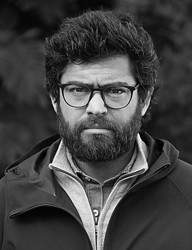
Docente Adjunto de la UTEC en el área de Efluentes y Residuos del Departamento de Sostenibilidad Ambiental, integrando el Grupo de investigación de Biotecnología y Química Ambiental (BiQA) y el Grupo de Investigación Estratégica Gestión Sostenible Suelo y Agua (GIE-GeSAS). Egresado de la carrera de Químico Agrícola y Ambiental de la UdelaR y de una Maestría de doble titulación en Ingeniería Sanitaria y Ambiental otorgada por el instituto IHE (Delft, Holanda) y la Universidad del Valle (Cali, Colombia). Además, realiza el Doctorado en Química de la UdelaR en la UTEC y el IIBCE. Se especializa en el estudio de efluentes y residuos agroindustriales, el desarrollo de biotecnologías para su valorización, y en la evaluación de la sostenibilidad de estas tecnologías.
Kelly Liesenfeld
Universidad Tecnológica del Uruguay (UTEC) kelly.liesenfeld@utec.edu.uyIngeniera Ambiental y Sanitarista y se desempeña como docente e investigadora en la carrera de Ingeniería en Agua y Desarrollo Sostenible de la Universidad Tecnológica del Uruguay (UTEC). Posee una Maestría en Agua y Desarrollo Sostenible, con perfil en Ingeniería Sanitaria, y actualmente realiza estudios de doctorado en Ingeniería en el área de tecnología de materiales y medio ambiente.
Recursos de apoyo
para orientar el proceso de evaluación de trabajos
por parte del Comité Científico
📋 Apreciados miembros del comité científico:
Como pasos previos al diligenciamiento del formulario de evaluación, les solicitamos muy amablemente:
1. ✅ Leer atentamente los trabajos presentados por los autores correspondientes al eje temático del cual hacen parte.
2. ✅ Verificar que cada trabajo se encuentra debidamente anonimizado.
3. ✅ Registrar, en el siguiente formulario, la evaluación colegiada correspondiente a los trabajos del eje temático del cual hace parte:
¡Importante! Le recordamos registrar su respuesta en el formulario antes del miércoles 20 de mayo de 2026, a las 16:00 h.
📚 Además, ponemos a disposición los siguientes recursos de apoyo, con el propósito de orientar y facilitar la organización de los criterios de evaluación:
📚 A continuación, se presentan algunos recursos utilizados previamente por los autores de los trabajos recibidos:
Ponentes
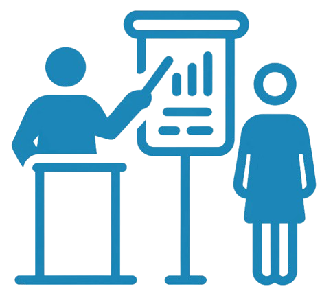
Información de interés para la participación como ponente:
En el marco del congreso TecBioTec, una ponencia es una presentación oral formal en la que un participante (autor o coautor) expone su investigación, proyecto o estudio en desarrollo o terminado, frente a una audiencia compuesta por estudiantes, académicos, profesionales e interesados en las temáticas del evento.
La ponencia tiene como objetivo compartir avances científicos y tecnológicos, así como fomentar el intercambio de ideas y generar un espacio de discusión crítica.
Formato para la elaboración de presentaciones para la realización de ponencias en TecBioTec 2026
¡Descarga formato de presentaciones aquí!Las ponencias pueden abordar resultados de investigaciones científicas, estudios de caso, avances tecnológicos o aplicaciones prácticas relacionadas con los ejes temáticos del congreso.
Título de la Ponencia
Debe ser claro, conciso y representar el contenido del trabajo.
Autores y Afiliaciones
Incluir el nombre de todos los autores, junto con sus respectivas instituciones, correos electrónicos institucionales y cualquier otra información de contacto relevante.
Resumen
Una versión breve del resumen de 250 palabras ya presentado, que los autores pueden utilizar como introducción verbal a la audiencia. Debe incluir el objetivo del estudio, la metodología básica y las conclusiones más importantes.
Introducción
- Contextualización del tema, ¿Por qué es relevante esta investigación?, ¿Qué problema busca resolver?
- Pregunta o hipótesis de investigación.
- Plantear claramente el objetivo del trabajo.
- Relación con los ejes temáticos del congreso.
Metodología
- Explicación clara y detallada de los métodos utilizados en la investigación.
- Descripción de las herramientas, técnicas y enfoques aplicados.
- Indicar cualquier limitación o consideración ética (si corresponde).
Resultados
Presentación de los resultados más importantes, respaldados por gráficos, tablas o imágenes. Hay que destacar los resultados que responden a la pregunta de investigación o que contribuyen significativamente al avance de la temática.
Discusión y Análisis
- Interpretación de los resultados: ¿Qué significan estos hallazgos? ¿Cómo se comparan con investigaciones previas?
- Discute las implicaciones de los resultados para el campo de estudio o la industria.
- Mencionar las limitaciones del estudio y posibles áreas para investigaciones futuras.
Conclusiones
- Resumen de los hallazgos más importantes y su relevancia para el área de estudio.
- Relación con los Objetivos de Desarrollo Sostenible.
Agradecimientos (Opcional)
Mención de cualquier institución, entidad o persona que haya contribuido significativamente al desarrollo de la investigación.
Referencias
Si bien no se suele incluir una lista extensa de referencias en la presentación oral, es útil tener algunas citas clave disponibles en caso de preguntas. También se pueden incluir en las diapositivas finales si es necesario.
Recomendación: Mínimo cinco fuentes de información confiable de los últimos 5 años. (Citación en norma APA).
Preguntas y Respuestas
Duración: de 3 a 5 minutos máximo.
Espacio para interactuar con el público, respondiendo a preguntas o comentarios que surjan de la presentación una vez finalice esta.
Formato Visual (Diapositivas)
- Se recomienda un promedio de 8-12 diapositivas, teniendo en cuenta la duración de la ponencia.
- Evitar saturar las diapositivas con mucho texto.
- Gráficos y visualizaciones: Incluir gráficos, tablas y figuras claras para respaldar los resultados y facilitar la comprensión.
- Estilo: Seguir una estructura visual simple, alineada con la identidad visual del congreso (considerar la guía de estilos de UTEC), para que el contenido sea legible y atractivo.
Recursos complementarios
- Manual de identidad visual de UTEC
- Plataforma RED UTEC
- Formato sugerido: Formato de presentaciones TecBioTec 2026 (Documento descargable en esta sección)
- Referente documental institucional: Circular de trabajos finales de carreras
Pósteres
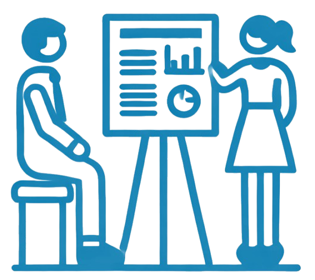
Información de interés para la participación en modalidad de póster:
El póster debe ser visualmente atractivo, dado que la interacción será más dinámica e informal que en una ponencia oral.
Formato para la elaboración de pósteres a presentar en TecBioTec 2026
¡Descarga formato de póster aquí!El contenido debe ser legible desde una distancia de al menos un metro.
El título debe ser breve y representativo del contenido del trabajo.
- Debajo del título, incluir los nombres de los autores y sus respectivas instituciones, correos electrónicos u otra información de contacto.
- Tamaño de letra sugerido: 36-50 puntos.
- Identificar claramente la dirección de correo electrónico del autor principal para que los interesados en el trabajo puedan contactarlo.
Contexto del Problema
Breve contexto del problema o pregunta de investigación que aborda el estudio. Utilizar gráficos, diagramas o imágenes que ayuden a contextualizar el tema.
Metodología
Explicación concisa de los métodos empleados en el estudio. Incluir diagramas de flujo, esquemas o fotos del equipo o técnicas utilizadas.
Resultados
Sección central y más importante del póster, donde se presentan los hallazgos clave.
- Utilizar gráficos de barras, tablas, imágenes, mapas o diagramas claros que ilustren los datos.
- Cada gráfico debe ir acompañado de un breve texto explicativo o leyenda.
Discusión
- Interpretación de los resultados. ¿Qué significan? ¿Cómo se relacionan con otros estudios?
- Indicar las limitaciones y posibles implicaciones para el campo de estudio o aplicaciones prácticas.
Conclusiones
Resumir en breves puntos los principales hallazgos y sus implicaciones.
Citas y Referencias
Incluir citas importantes. Esta sección va en la parte inferior, en un tamaño de letra más pequeño (20-30 puntos).
Código QR o Enlace al Trabajo (Opcional)
Se puede añadir un código QR o un enlace a una versión digital del trabajo completo para facilitar que los asistentes puedan profundizar en el estudio posteriormente.
- Uso del espacio: El póster debe estar bien equilibrado, sin sobrecargar una sección.
- Tipografía: Usar una tipografía clara y legible que esté alineada con la identidad visual del congreso.
- Color: Utilizar una paleta de colores coherente con el diseño del congreso.
- Gráficos e imágenes: Los gráficos deben ser grandes y estar bien etiquetados.
- Claridad: Evitar el uso excesivo de texto.
Lugar
UTEC en Fray Bentos (Barrio Anglo)
Sede UTEC en Fray Bentos
La sede del ITR Suroeste de UTEC, ubicada estratégicamente en el histórico Barrio Anglo (declarado Patrimonio de la Humanidad por la UNESCO), es un polo de innovación donde el legado industrial se encuentra con la tecnología del futuro. El campus cuenta con laboratorios de última generación en Electrónica, Mecatrónica, Biomédica y Química, además de una sala de informática, un aula 3.0, un centro logístico y un Laboratorio de Innovación Abierta (LabA). Diseñado para fomentar un ecosistema de 'aprender haciendo', el edificio no solo conecta a los estudiantes con el sector productivo de la región, sino que también ofrece espacios vibrantes para el esparcimiento y la co-creación, incluyendo una cafetería y una amplia terraza con una vista privilegiada al río Uruguay.
Inscripciones
Participa como asistente
¡Evento gratuito!
Este congreso es sin costo de participación para todos los asistentes.
¡Estás cordialmente invitado a asistir al 2o Congreso de Tecnología y Biociencias TecBioTec de UTEC! Únete a estudiantes, académicos, investigadores y profesionales en este evento clave para descubrir los últimos avances en ingeniería y biociencias. Será una oportunidad única para aprender de expertos, establecer redes de contactos y conocer soluciones innovadoras que impulsan el desarrollo sostenible.
Si te apasiona la ciencia y la tecnología, no te lo pierdas.
¡Ven y participa activamente en el futuro del conocimiento!
_TECBIOTEC.png)
_TECBIOTEC.png)
Participa como ponente o con póster
¡Te invitamos a inscribir tu trabajo en el 2o Congreso de Tecnología y Biociencias TecBioTec de UTEC! Envía la información detallada de tu investigación o proyecto para participar como ponente o presentar un póster. Comparte tus ideas y contribuciones con una audiencia diversa de académicos, investigadores y profesionales.
Es una oportunidad única para mostrar tu trabajo, recibir retroalimentación valiosa y formar parte del diálogo sobre los avances en ingeniería y biociencias.
¡Inscribe tu trabajo y únete a la conversación!
¡Evento gratuito!
Este congreso es sin costo de inscripción de trabajos para los autores.
Fecha límite de inscripción de trabajos:
viernes, 17 de abril 2026 - 23:59 Horas
Nueva fecha: domingo, 26 de abril 2026 - 23:59 Horas¡Prepara tu ORCID!
Para el proceso de inscripción de trabajos, será indispensable que todas las personas autoras cuenten con su propio identificador digital de investigador (ORCID). Este dato deberá registrarse al momento de completar el formulario de postulación del trabajo. En caso de que alguna persona autora aún no disponga de este identificador, será necesario crearlo; su obtención es gratuita y puede completarse en pocos minutos.
Material de apoyo para autores
🎥 Antes de comenzar, puedes consultar la videoguía práctica de apoyo para una postulación exitosa, elaborada para orientarte en el proceso de postulación y facilitar el registro de tu trabajo en el formulario.
📄 Además, puedes acceder a los documentos PDF que contienen la guía práctica presentada al inicio del Formulario para la postulación de trabajos al congreso TecBioTec 2026 y el ejercicio de ejemplo desarrollado en el video, resguardado también en formato PDF. Al finalizar el proceso, el PDF con el resguardo de tu trabajo tendrá una presentación semejante.
Fecha límite de inscripción de trabajos:
viernes, 17 de abril 2026 - 23:59 Horas
Nueva fecha: domingo, 26 de abril 2026 - 23:59 HorasContacto comité organizador
¿Preguntas y Comentarios? escribe al correo de contacto: tecbiotec@utec.edu.uy
Yamilé Lara
Copresidencia General

Coordinación
Ingeniería en Mecatrónica
Email: yamile.lara@utec.edu.uy
Es Ingeniero en Mantenimiento Industrial (Venezuela, 2003), cuenta con un Diploma de Estudios Avanzados (Máster) en Ingeniería de Materiales (España, 2008) y es Magíster Scientiarum en Ingeniería Mecánica (Venezuela, 2011). Ha cursado estudios de doctorado en Ingeniería Estructural en la Universidad de la República (Uruguay, 2022) y de especialización en Didáctica de la Educación Superior en CLAEH (Uruguay, 2021). Desde 2006 se ha desempeñado como investigador en el Centro de Termofluidodinámica y Mantenimiento, así como docente de Ingeniería Mecánica en la Universidad de Oriente, donde además asumió cargos de dirección y coordinación hasta 2018. Su trayectoria incluye publicaciones científicas en temas de mantenimiento y confiabilidad, desgaste, lubricación de equipos rotativos y materiales, participación en más de diez congresos y asesoramiento de más de 65 trabajos de investigación de grado y posgrado. También se desempeñó como Gerente de Proyectos y Adiestramiento en Centauro Consultores C.A. (2012–2017) y como Ingeniero en Confiabilidad en SKILL S.A., Uruguay (2018–2019). Desde 2019 es Docente Adjunto de Ingeniería Mecatrónica en UTEC Fray Bentos.
Annabela Estevez
Copresidencia General

Coordinación
Licenciatura en Análisis Alimentario
Email: annabela.estevez@utec.edu.uy
Es Químico Farmacéutico y cuenta con más de diez años de experiencia en la coordinación y gestión de programas académicos vinculados al sector alimentario en la Universidad Tecnológica del Uruguay (UTEC). Su trayectoria se ha orientado al diseño e implementación de planes de estudio innovadores, al fortalecimiento de vínculos con actores de la industria y la comunidad, y al liderazgo de proyectos de investigación relacionados con productos naturales. Asimismo, ha desarrollado experiencia en el sector privado como especialista en calidad, cosmética y productos naturales, además de brindar asesoramiento en tecnologías alimentarias. Su perfil integra competencias en mejora de procesos de fabricación, resolución de problemas y comunicación, con el propósito de aportar al desarrollo del conocimiento y la práctica en seguridad, calidad y sostenibilidad de los alimentos.
Nolán Sánchez T.
Copresidencia General

Coordinación Ingeniería Logística
(Sede Fray Bentos)
Email: nolan.sanchez@utec.edu.uy
Su experiencia se orienta al diseño y la gestión de cadenas de suministro resilientes, así como al diseño, implementación, gestión y control de redes de distribución, cadenas de suministro, logística integral, inventarios, gestión de proveedores e indicadores de desempeño. También ha trabajado en el diseño y control de políticas de compras basadas en enfoques Lean, promoviendo la eliminación de desperdicios, la optimización de utilidades, la mejora del servicio al cliente y el fortalecimiento de su fidelización. Asimismo, ha impulsado el aumento en la velocidad de respuesta a los requerimientos de los clientes mediante la implementación de sistemas de información inteligentes, ágiles y de última generación.
Juan Pablo Franco Rubio - JPFR
Comité de Innovación de Procesos y Desarrollo Tecnológico
Docente Ingeniería Logística
e Ingeniería Mecatrónica
Email: juan.franco.r@utec.edu.uy
Es Magíster en Diseño y Gestión de Procesos con énfasis en Sistemas Logísticos por la Universidad de La Sabana (2014), Especialista en Administración Informática por la Universidad de Santander (2013) e Ingeniero Electrónico por la Escuela Colombiana de Ingeniería Julio Garavito (2008). Cuenta con diez años de experiencia como consultor empresarial en la caracterización y mejora de procesos organizacionales vinculados a la cadena productiva de la imaginación, la creatividad y la innovación, así como en labores de documentación, análisis y minería de datos para la obtención de información y su transformación en conocimiento. Su trayectoria incluye además catorce años de experiencia en el ámbito académico, así como participación en emprendimientos del sector agroproductivo y en el asesoramiento a personas y organizaciones en procesos de ideación y fortalecimiento de negocios, especialmente en el contexto de mercados emergentes.
Jesús D. Martínez V. - JDMV
Comité de Innovación de Procesos y Desarrollo Tecnológico
Docente Ingeniería Mecatrónica
e Ingeniería Logística
Email: jesus.martinez@utec.edu.uy
Es Ingeniero Electrónico y cuenta con una Maestría en Tecnología Educativa por la Universidad de La Rioja. Actualmente se desempeña como docente encargado del área de Electricidad y Electrónica. Su experiencia profesional incluye la gestión de usuarios en aplicaciones con más de diez mil usuarios, la automatización de procesos repetitivos orientados a la optimización de procesos bajo normativa SOX, el manejo básico de Directorio Activo, la elaboración de informes y el uso de herramientas como Ofimática, Agility Studio y Moodle. Asimismo, posee conocimientos en lenguajes de programación como JavaScript, Python y C++, así como en el uso de frameworks como Selenium. También cuenta con experiencia en el levantamiento de procesos para automatizaciones RPA, la elaboración de documentos PDD y la diagramación de procesos AS-IS y AS-DONE.
Diego Acero Soto
Comité de Innovación de Procesos y Desarrollo Tecnológico

Doctorado
Gestión de la Innovación Tecnológica
Email: dacero@pedagogica.edu.co
Es Ingeniero Electrónico y estudiante de doctorado en el programa DGIT de la Universidad de los Andes, Colombia. Se desempeñó como docente de inicio a la investigación en UTEC en el segundo semestre de 2023. Docente investigador con 23 años de experiencia. Experto en desarrollo de hardware-software y educación en tecnología.
María Rossina Figliolo
Comité de Gestión y Comunicación Interna y Externa

Docente
Licenciatura en Análisis Alimentario
Email: maria.figliolo@utec.edu.uy
Es Química Farmacéutica egresada de la Universidad de la República (Udelar). Desde 2018 se desempeña como docente de Fisicoquímica General e Industrial en la carrera Licenciatura en Análisis Alimentario de UTEC, correspondientes al tercer y cuarto semestre, respectivamente. Además, durante nueve años estuvo a cargo de la asignatura Fisicoquímica del Tecnólogo Químico de Paysandú. Actualmente es doctoranda en el área de Productos Naturales en la Universidad de la República.
Miqueas Abraham
Comité de Gestión y Comunicación Interna y Externa

Docente
Licenciatura en Análisis Alimentario
Email: mauricio.abraham@utec.edu.uy
Es Ingeniero Químico por la Universidad de la República. Actualmente se desempeña como docente encargado de los cursos Operaciones Unitarias I y II, correspondientes al sexto y séptimo semestre, respectivamente.
Jhonatan M. Cardozo C.
Comité de Gestión y Comunicación Interna y Externa
Docente
Licenciatura en Análisis Alimentario
Email: jhonatan.cardozo@utec.edu.uy
Es Licenciado en Análisis Alimentario, egresado en 2025, y cuenta con experiencia en docencia universitaria y trabajo técnico en el área de química aplicada. Actualmente se desempeña como Docente de Inicio en la Licenciatura en Análisis Alimentario, participando en cursos de Química Orgánica, Inorgánica y Analítica, y colaborando además en la enseñanza de Química General e Inorgánica en la carrera de Ingeniería en Mecatrónica. Desde 2023 integra el desarrollo del área de Productos Naturales dentro de la Universidad Tecnológica, participando en actividades de formación, investigación y vinculación con el medio. Asimismo, ha brindado asesoramiento técnico a emprendimientos del sector alimentario, especialmente en procesos de registro de productos ante autoridades bromatológicas, contribuyendo a la formalización y mejora de la calidad e inocuidad de los alimentos.
Agustina Rodriguez
Comité editorial
Docente Ingeniería Logística
Email: agustina.rodriguez@utec.edu.uy
Es Ingeniera en Alimentos por la Facultad de Ingeniería Química de la Universidad Nacional del Litoral, en Santa Fe, Argentina. Además, cuenta con una Maestría en Organización de Empresas y Proyectos Industriales por la Universidad Europea del Atlántico y una Diplomatura en Desarrollo Sostenible por la Universidad Tecnológica Nacional, en Buenos Aires, Argentina. Posee diez años de experiencia en la implementación de sistemas de gestión de calidad e inocuidad, sistemas de gestión ambiental y proyectos de mejora continua.
Yecaranda Ramos
Comité editorial
Docente Ingeniería Mecatrónica
Email: yecaranda.ramos@utec.edu.uy
Es Licenciada en Comunicación Social, egresada de la Universidad Yacambú, Venezuela, en 2019, y cuenta con más de seis años de experiencia como periodista en medios de comunicación regionales, nacionales e internacionales. Su trayectoria incluye el liderazgo y la ejecución de procesos de producción en radio, televisión, redes sociales y medios digitales. Además, se desempeñó como agente comunitaria par en Colombia entre 2020 y 2021, y previamente participó en dos experiencias de voluntariado en Venezuela entre 2012 y 2019, donde fortaleció su experiencia en formación, acompañamiento y animación de niños, jóvenes y adultos. Actualmente, trabaja como Docente de Inicio en Ingeniería en Mecatrónica.
Yazmín Bentancour
Comité de Programa y Logística Local
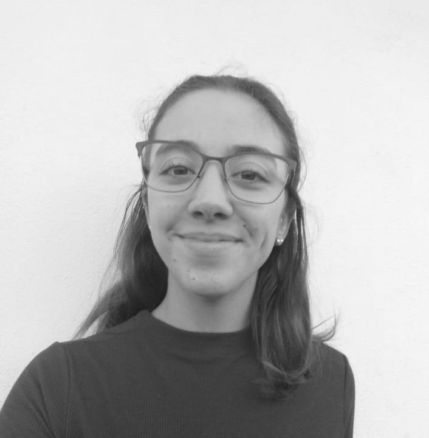
Docente Ingeniería Mecatrónica
Email: yazmin.bentancour@utec.edu.uy
Es Tecnóloga en Mecatrónica y estudiante de Ingeniería en Mecatrónica. Actualmente se desempeña como Docente de Inicio del área de Ingeniería Mecatrónica en el ITR Suroeste. Durante 2024 fue becaria de la carrera de Ingeniería en Mecatrónica, y en 2025 se desempeñó como becaria de iniciación a la investigación de UTEC en la Unidad Tecnológica IMTE.
María Luciana Chelotti
Comité de Programa y Logística Local

Docente
Ingeniería Mecatrónica
Email: maria.chelotti@utec.edu.uy
Es Licenciada en Bioinformática, egresada en 2012 de la Facultad de Ingeniería de la Universidad Nacional de Entre Ríos (FIUNER), Argentina. Actualmente cursa el Profesorado de Química en el Instituto de Formación Docente “Dr. Guillermo Ruggia” de Fray Bentos, Río Negro, Uruguay. Entre 2012 y 2018 se desempeñó como laboratorista en el Instituto Nacional de Tecnología Agropecuaria (INTA), en Argentina, y posteriormente trabajó en el laboratorio de Microbiología del Laboratorio Tecnológico del Uruguay, Unidad Fray Bentos (LATU-UFB). En la actualidad, se desempeña como Docente de Inicio de Química en la carrera de Ingeniería en Mecatrónica de UTEC ITR Suroeste.
Anelisse Plachicoff
Comité de Programa y Logística Local
Coordinadora
Relacionamiento con el medio
Email: anelisse.plachicoff@utec.edu.uy
Es Licenciada en Relaciones Internacionales, con orientación en Comercio Exterior, egresada de la Facultad de Derecho de la Universidad de la República. Cuenta con certificación como Project Management Professional (PMP) otorgada por el Project Management Institute (PMI) y con certificación en Liderazgo de la Innovación por el Massachusetts Institute of Technology (MIT). Actualmente se desempeña como Coordinadora de Relacionamiento con el Medio en UTEC, donde trabaja en la generación, desarrollo y consolidación de vínculos con organizaciones, instituciones y empresas, así como en la gestación y coordinación de proyectos de extensión. Además, es Docente de Inicio en el Programa de Emprendimientos. Desde 2019 participa en la formulación, evaluación, ejecución y gestión de proyectos presentados a instrumentos públicos y privados orientados a promover mejoras tecnológicas en las empresas. Asimismo, acompaña a personas emprendedoras en la generación de sinergias y prácticas asociativas que contribuyan al logro de sus objetivos.
Con el apoyo institucional de:
Participación estratégica:
Empresarial y Gubernamental
Próximamente disponible. Estamos trabajando en el relacionamiento estratégico.